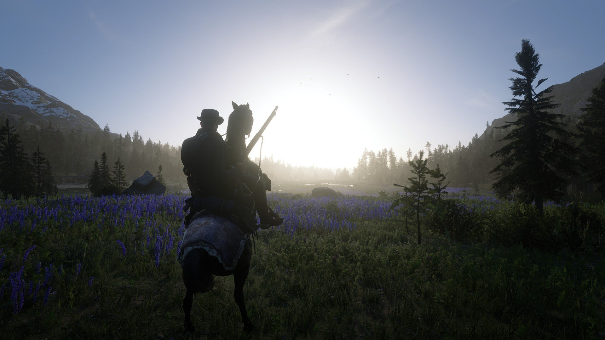
Особистий архів · знімок 2021–2022
Ігри
Історичний список ігор із мого профілю Steam та бібліотеки Epic Games. Статуси, дати й час у грі нижче зафіксовані у 2021–2022 роках і не описують мій поточний прогрес.
20 збережених записів
Ігрова полиця
Відфільтруйте записи за тим статусом, який вони мали у старій версії сайту.
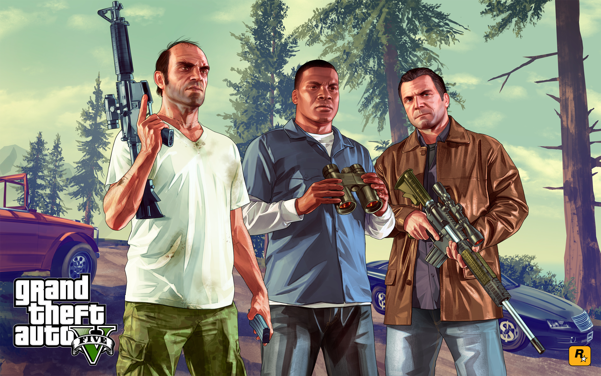
Grand Theft Auto V
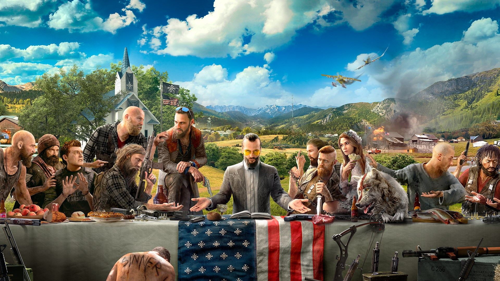
Far Cry 5
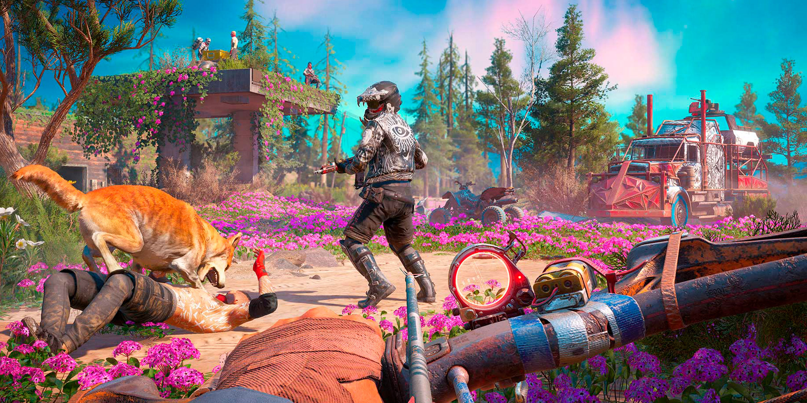
Far Cry: New Dawn
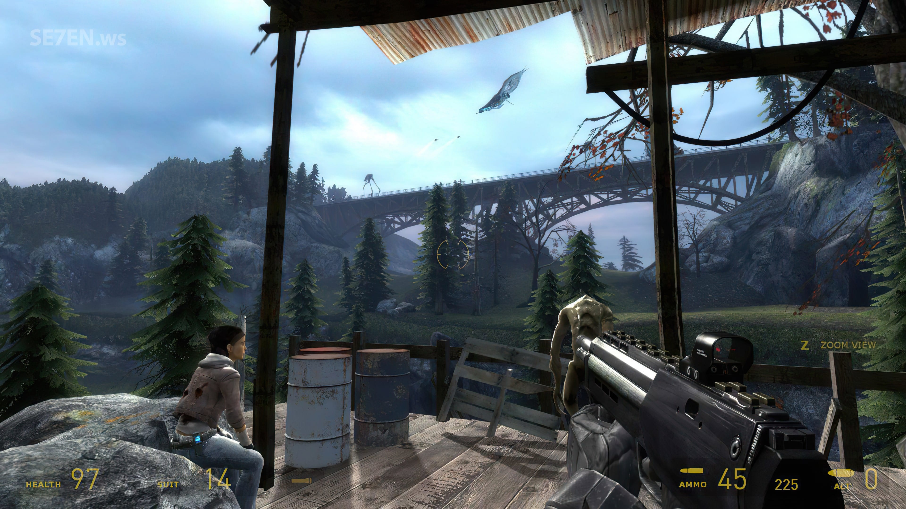
Half-Life 2
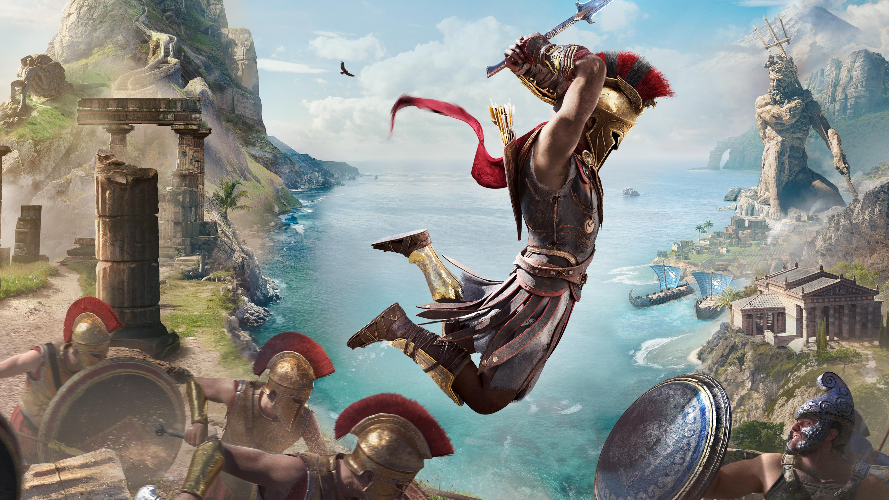
Assassin's Creed Odyssey
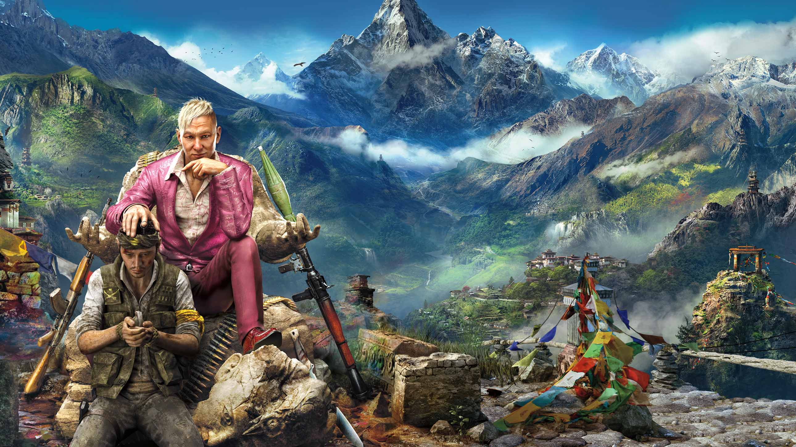
Far Cry 4
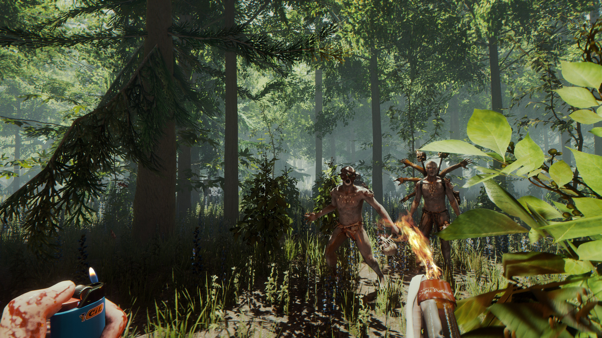
The Forest
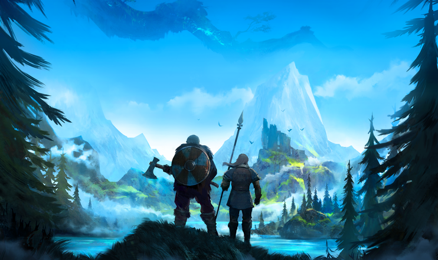
Valheim

The Survivalists
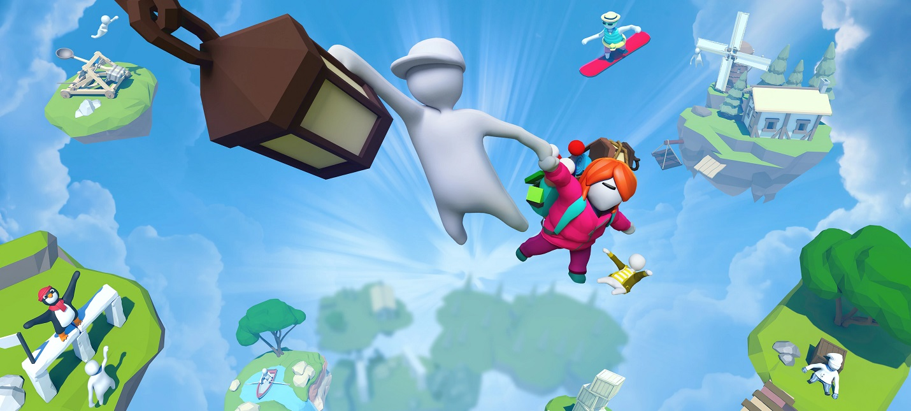
Human: Fall Flat
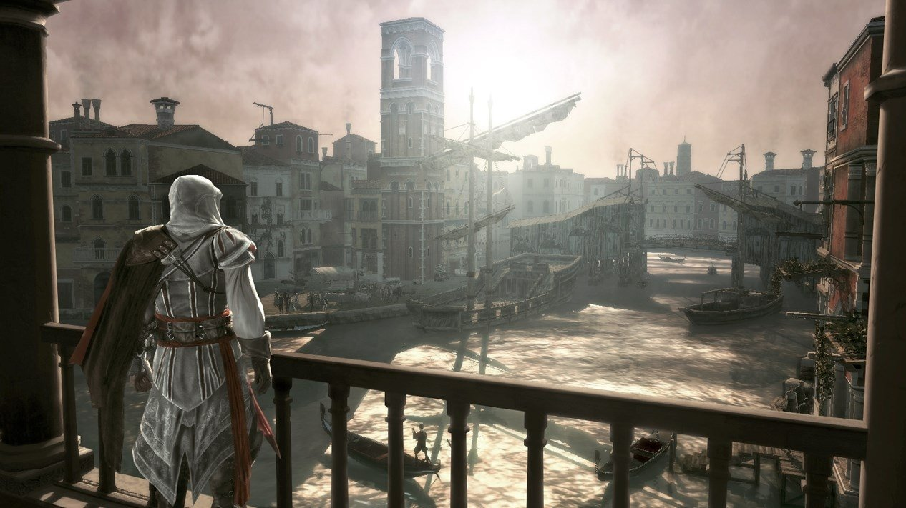
Assassin's Creed II
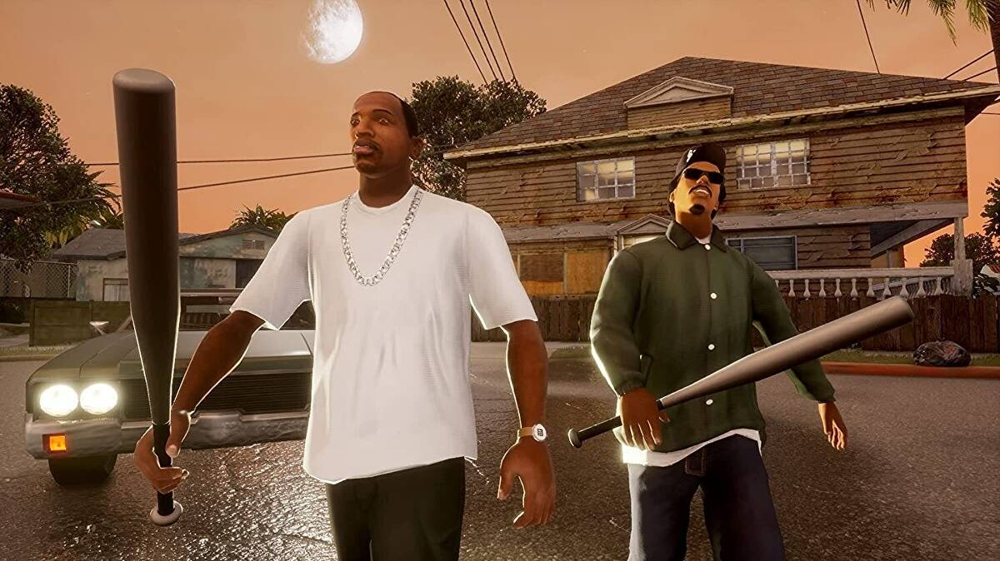
Grand Theft Auto: San Andreas
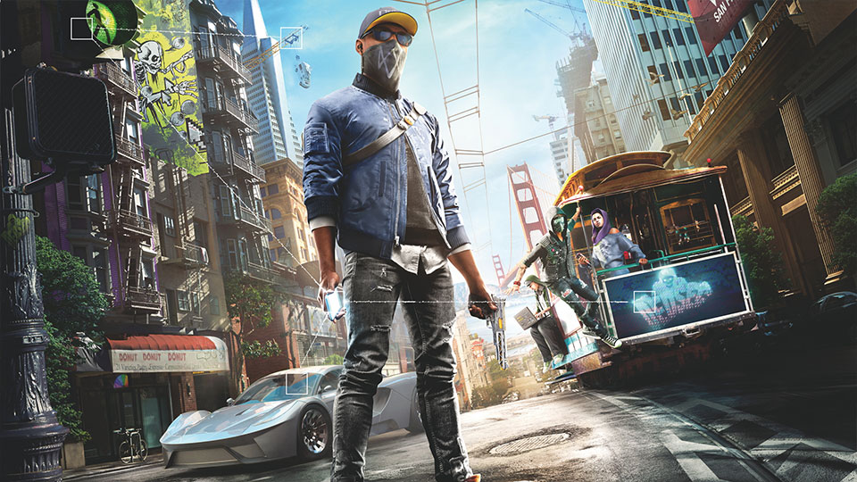
Watch_Dogs 2
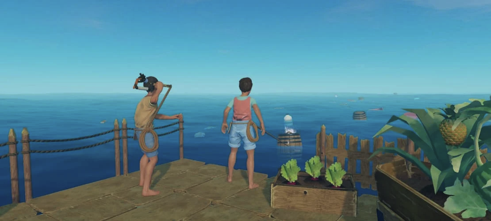
Raft
Detroit: Become Human
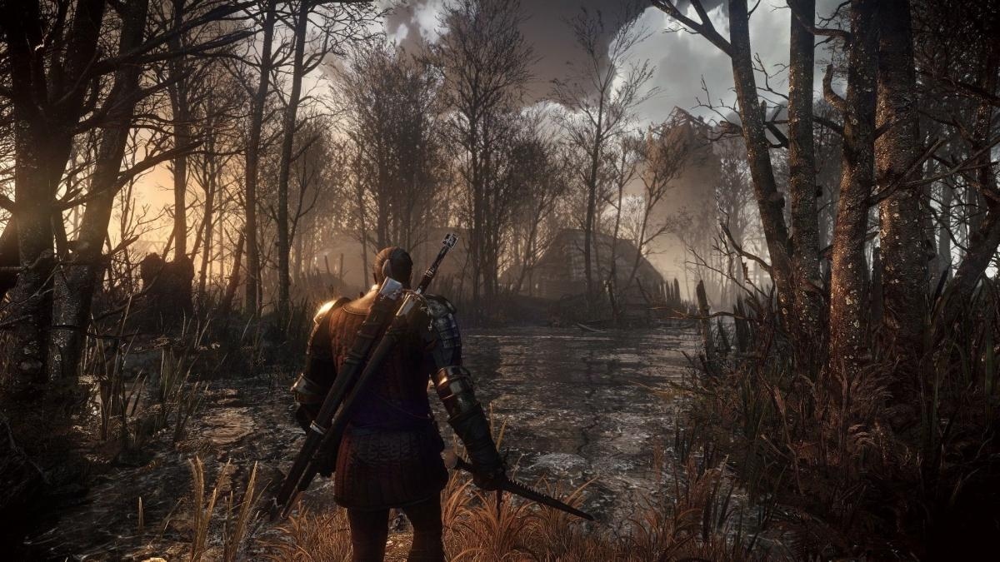
The Witcher: Wild Hunt
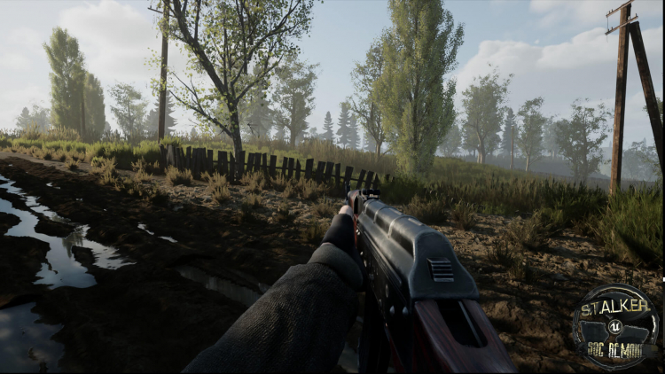
S.T.A.L.K.E.R.: Shadow of Chernobyl
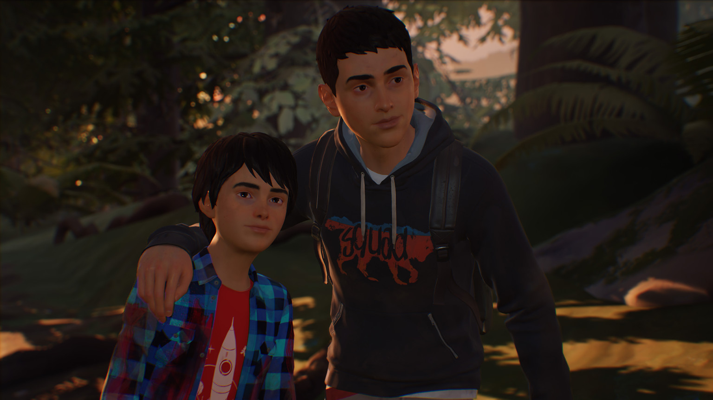
Life is Strange 2
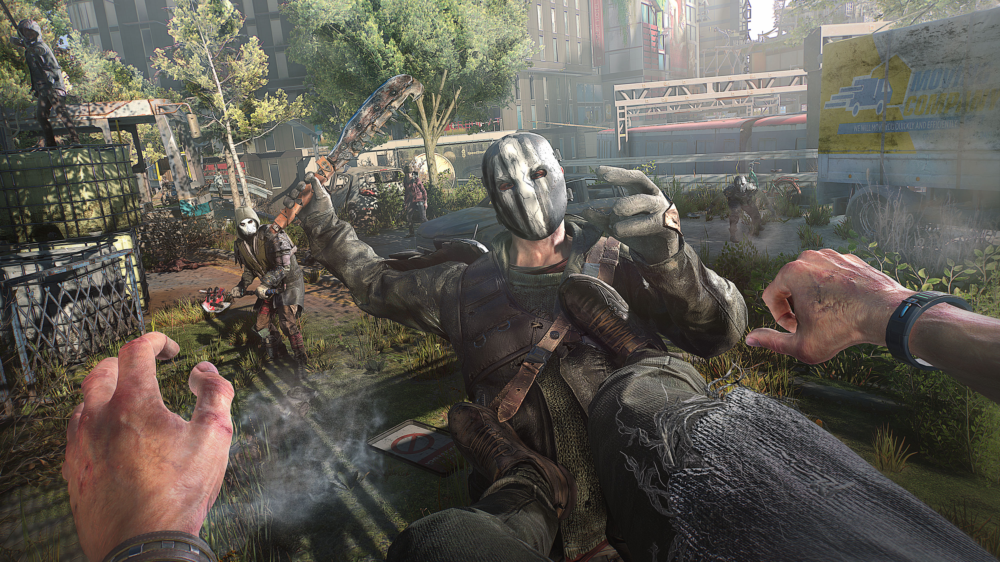